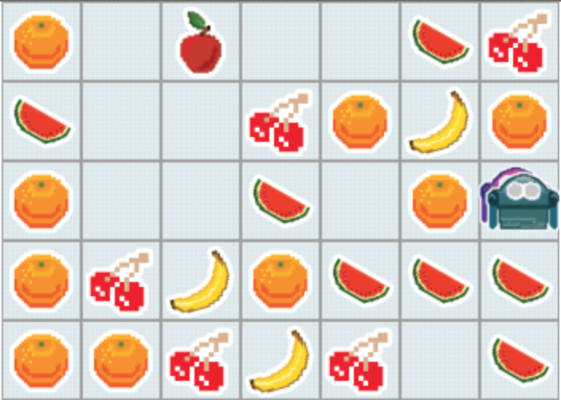

FruitBots
Table of Contents
1 Playing against an opponent
Code It
- So we've got some code that will let us pick up all the fruit on the board.
- Let's see how we do against a simpleBot that has been writen to compete against us.
- Go into the testing directory, then into a directory called assets, then into a directory called js.
- In there you should find a bot called simplebot.js. This is your opponent.
assets/js/simplebot.js
- Open simplebot.js in a text editor.
- At the top of simplebot.js is some code that looks like this.
var SimpleBot = {
makeMove: function() {
// to disable to opponent, uncomment the next line
return PASS;
- Comment out the
return PASS;so it looks like this.
var SimpleBot = {
makeMove: function() {
// to disable to opponent, uncomment the next line
// return PASS;
- Save the file.
- Now you have a bot to play against.
Run It
- Try running your bot from last lesson against the simpleBot.js
- How did you do?
- Change the default game board and see how you do on different boards.
2 The FruitBot rules
Learn It
- The rules of FruitBots are very simple.
- The bot that collects the most fruit, in the most categories wins.
- So if you collect more oranges than the other bot, you win in the category of oranges.
- You need to win more categories than the other bot to win the game.
3 What's your tactic?
Try It
- Look at the gameboard below.

- With a partner copy the board to a bit of paper or a mini-whiteboard. Use letters to symbolise the fruit and your bots.
- Now play a game of FruitBots with each other.
- Remember you can only move one square at a time.
- Taking a fruit takes up your turn.
- If you both take a fruit in the same turn, then you each get half of that fruit.
Code It
- After you've played a game or two of FruitBots, see if you can formalise the rules that you used in your attempt to win.
- Did you go after specific fruit at specific times?
- Did you keep track of the fruits left on the board?
- Did you try to take fruit you knew your opponenet needed?
- Did you stay close to your opponenent or try and keep distant from them?
- You rules might look something like this:
Pick a fruit. Repeat the following until I have all the fruit of that category Move towards that fruit Take it when on the square Find the closest fruit of the same category. Once all the fruit have been grabbed of that category, go back to the start.
Badge It
- To earn your badge for this lesson, you need to try and formalise your ideas in pseudocode.
- It doesn't really matter on the syntax of your pseudocode, but try and come up with an algorithm that could be translated into JavaScript.
- The above example has been shown in pseudocode below
target <-- random number between 1 and 5
repeat until target is not on board
target_x <-- target index in 1st board array
target_y <-- target index in 2nd board array
IF target_x < bot_x
return WEST
IF target_x > bot_X
return EAST
IF target_y < bot_y
return NORTH
IF target_y > bot_y
return SOUTH
IF target_x = bot_X AND target_y = bot_y
return TAKE